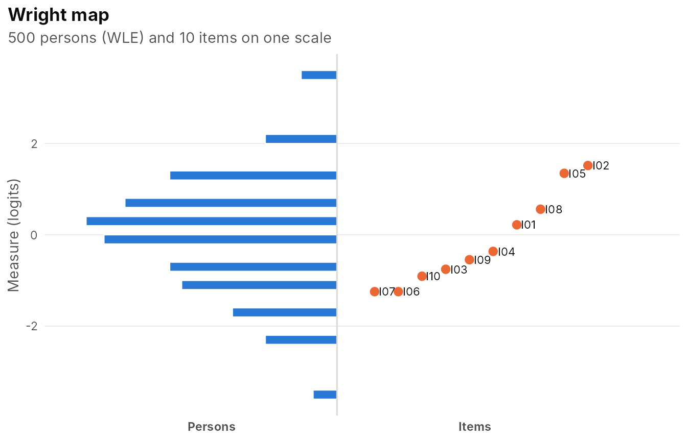
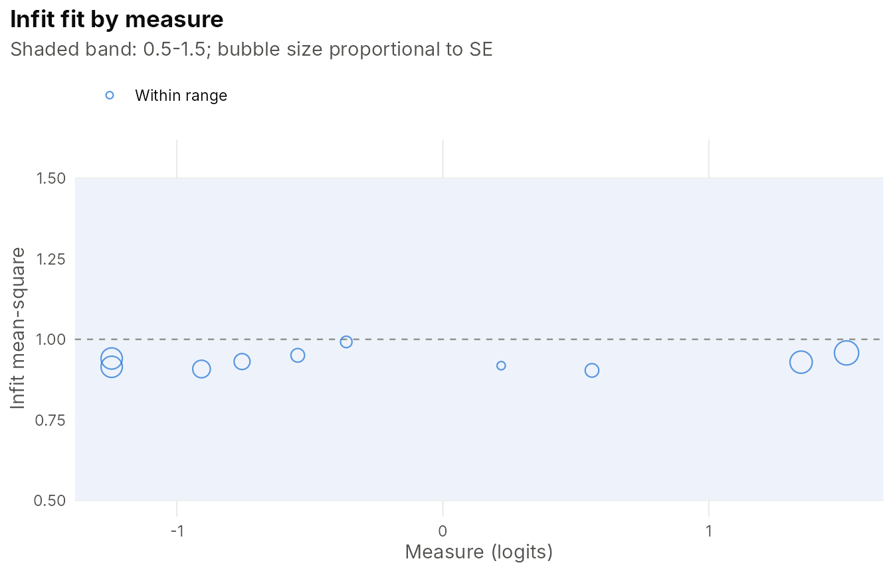
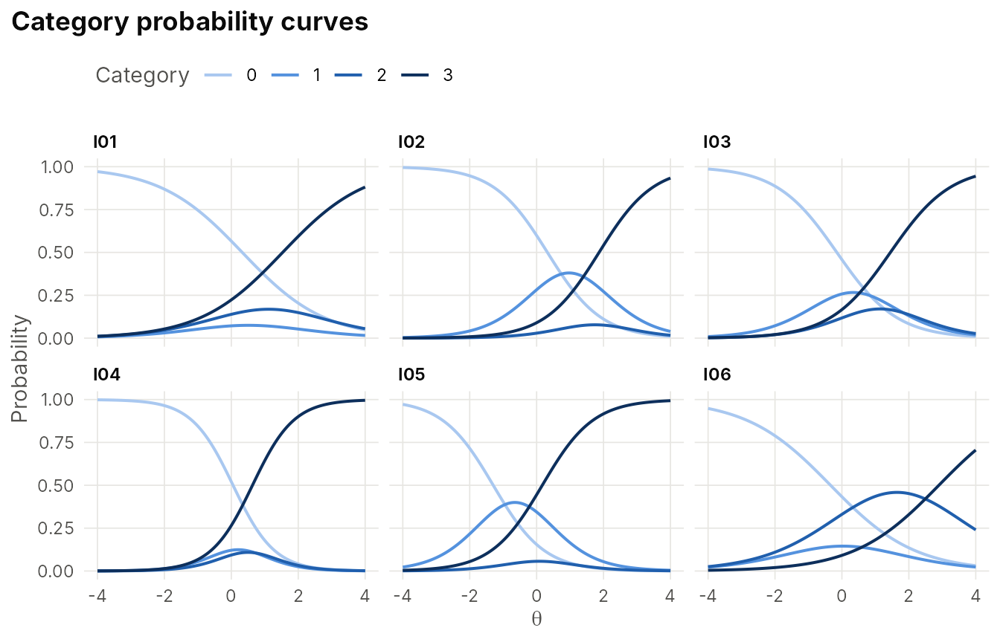
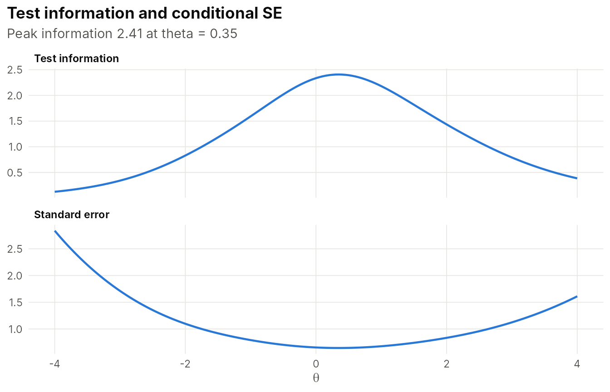
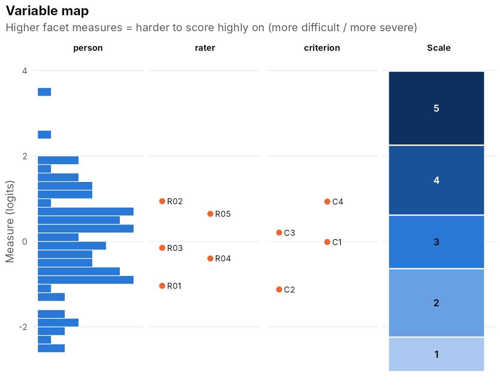
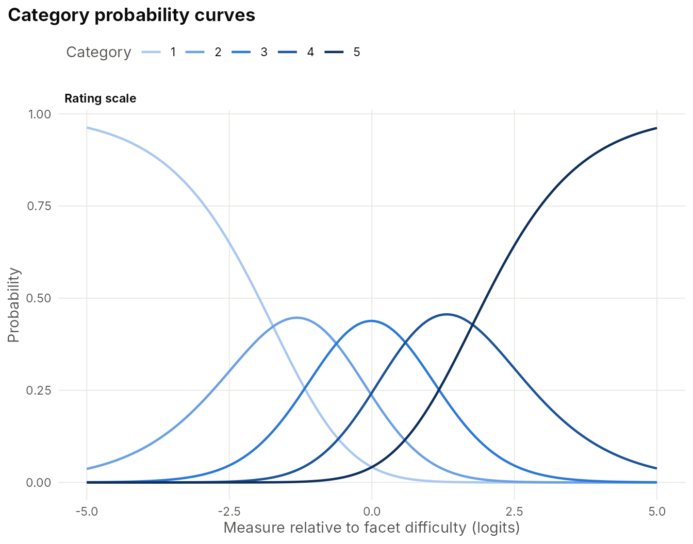
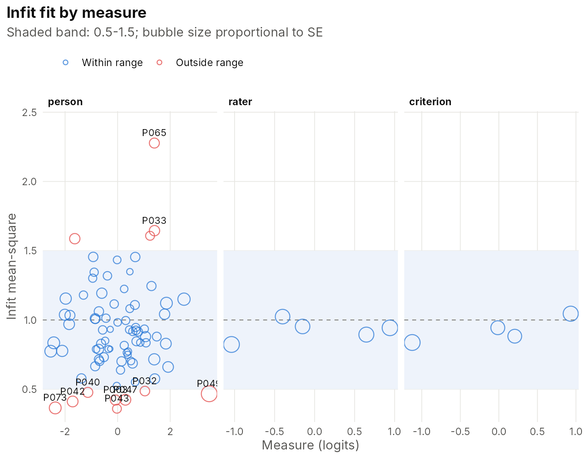
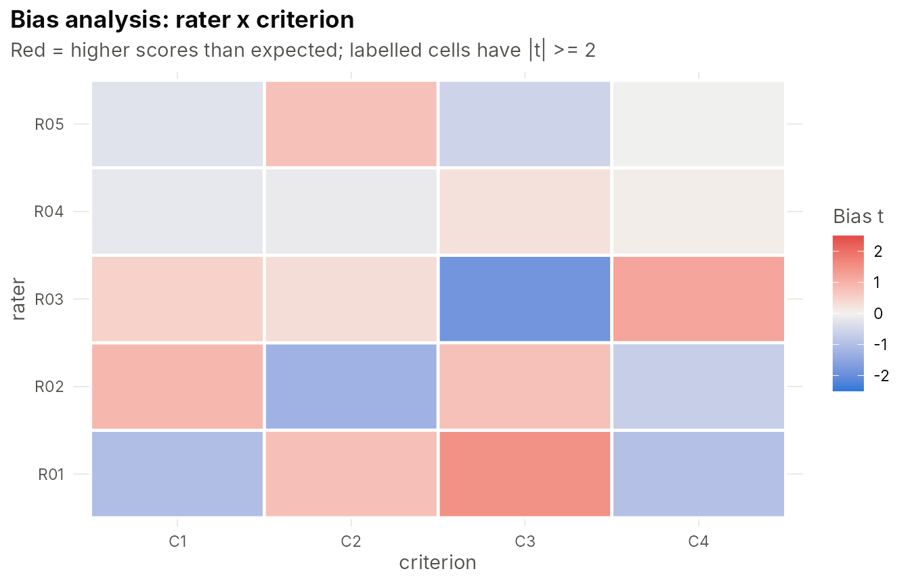

Getting started with IRTistic
IRTistic.RmdIRTistic puts model fitting, diagnostics, graphics and
reporting for item response theory (IRT) and Rasch measurement in one
place. Every analysis follows the same pattern:
- fit a model (
irt_fit()ormfrm_fit()), - inspect it with tables (
summary(),item_fit(),facet_report(), …), - draw it with
plot()or aplot_*()function. Plots are ggplot objects, so you can addfacet_wrap(), themes or labels as usual.
Dichotomous and polytomous IRT
dat <- sim_irt(500, nitems = 10, model = "rasch")
fit <- irt_fit(dat, model = "rasch")
summary(fit)
#> <irtfit> rasch (10) | 500 persons x 10 items | 1 dimension(s)
#> log-likelihood = -2937.985 AIC = 5897.97 BIC = 5944.33 (converged in 13 cycles)
#>
#> Item parameters:
#> item model b
#> I01 rasch 0.219
#> I02 rasch 1.518
#> I03 rasch -0.755
#> I04 rasch -0.363
#> I05 rasch 1.347
#> I06 rasch -1.245
#> I07 rasch -1.245
#> I08 rasch 0.561
#> I09 rasch -0.545
#> I10 rasch -0.907
#>
#> Latent covariance:
#> theta
#> theta 1.1
#>
#> Reliability:
#> index reliability separation strata
#> Person EAP 0.660 1.39 2.19
#> Person WLE 0.559 1.13 1.83
#> Item 0.987 8.61 11.82
#> Cronbach alpha 0.662 NA NAPerson measures by EAP, MAP, ML or WLE:
head(irt_scores(fit, "WLE"))
#> person theta se raw n extreme
#> 1 1 0.2783233 0.7135642 6 10 FALSE
#> 2 2 -0.6401268 0.7015035 4 10 FALSE
#> 3 3 -0.1868830 0.6970689 5 10 FALSE
#> 4 4 0.2783233 0.7135642 6 10 FALSE
#> 5 5 -0.1868830 0.6970689 5 10 FALSE
#> 6 6 -1.6371441 0.8010225 2 10 FALSERasch-style infit/outfit statistics are available for every model:
item_fit(fit)
#> item measure se n infit infit_z outfit outfit_z
#> 1 I01 0.2193539 0.1100784 480 0.9182199 -2.0933495 0.8903699 -1.9136361
#> 2 I02 1.5177369 0.1263227 480 0.9578376 -0.6651942 0.9794147 -0.1333617
#> 3 I03 -0.7547776 0.1138104 480 0.9309916 -1.5093353 0.8917035 -1.5541648
#> 4 I04 -0.3629412 0.1107332 480 0.9919926 -0.1791659 0.9880071 -0.1822402
#> 5 I05 1.3469741 0.1225936 480 0.9291663 -1.2470935 0.8812998 -1.1090429
#> 6 I06 -1.2449668 0.1209193 480 0.9147221 -1.5536415 0.8497705 -1.6323616
#> 7 I07 -1.2449668 0.1209193 480 0.9405083 -1.0682743 0.9782938 -0.1978956
#> 8 I08 0.5607176 0.1118517 480 0.9035766 -2.3426204 0.8666922 -2.0309009
#> 9 I09 -0.5454215 0.1118942 480 0.9503154 -1.1478636 0.9157006 -1.3335091
#> 10 I10 -0.9071373 0.1156131 480 0.9078892 -1.9290246 0.9402297 -0.7588364
#> obs_avg exp_avg pt_measure flag
#> 1 0.4500000 0.4521300 0.5129393 productive
#> 2 0.2062500 0.2217030 0.3534831 productive
#> 3 0.6520833 0.6423185 0.4869016 productive
#> 4 0.5729167 0.5676713 0.4525798 productive
#> 5 0.2333333 0.2474990 0.4112319 productive
#> 6 0.7416667 0.7274217 0.4650931 productive
#> 7 0.7416667 0.7274217 0.4271970 productive
#> 8 0.3791667 0.3854824 0.5098505 productive
#> 9 0.6104167 0.6029872 0.4830315 productive
#> 10 0.6812500 0.6699304 0.4859177 productive
plot(fit, "wright")
plot(fit, "fit")
plot(fit, "icc", items = 1:6)
Polytomous models ("grm", "pcm",
"gpcm", "rsm") and mixed tests work the same
way:
poly <- sim_irt(500, nitems = 6, model = "grm", ncat = 4)
fg <- irt_fit(poly, "grm", se = "none")
plot(fg, "icc")
plot(fg, "info")
Compare nested models with a likelihood-ratio test:
d2 <- sim_irt(500, 8, "2pl")
anova(irt_fit(d2, "rasch", se = "none"), irt_fit(d2, "2pl", se = "none"))
#> model npar logLik AIC BIC LR df_diff p
#> 1 rasch 9 -2550.433 5118.867 5156.798 NA NA NA
#> 2 2pl 16 -2545.051 5122.102 5189.536 10.76442 7 0.1492303Assumption checks
local_dependence(fit)
#> Yen's Q3: mean off-diagonal = -0.103; 0 pair(s) flagged
#> item1 item2 Q3 Q3_star flag
#> I06 I08 -0.0250 0.0779 FALSE
#> I05 I09 -0.0450 0.0579 FALSE
#> I03 I05 -0.0458 0.0571 FALSE
#> I01 I04 -0.0512 0.0518 FALSE
#> I03 I06 -0.0516 0.0514 FALSE
#> I08 I10 -0.0593 0.0436 FALSE
#> I02 I07 -0.0603 0.0426 FALSE
#> I02 I10 -0.0681 0.0349 FALSE
#> I01 I10 -0.0710 0.0320 FALSE
#> I01 I02 -0.0729 0.0300 FALSE
residual_pca(fit)
#> Residual PCA eigenvalues (first 5):
#> [1] 1.268 1.228 1.174 1.138 1.119
#> First contrast: eigenvalue 1.27 (12.7% of residual variance)Many-facet Rasch measurement (FACETS-style)
Rater-mediated data come in long format, one row per rating:
ratings <- sim_mfrm(n_person = 80, n_rater = 5, n_criterion = 4, design = 0.8)
head(ratings)
#> person rater criterion score
#> 1 P002 R01 C1 4
#> 2 P003 R01 C1 4
#> 3 P006 R01 C1 3
#> 4 P007 R01 C1 5
#> 5 P010 R01 C1 3
#> 6 P011 R01 C1 3
mf <- mfrm_fit(ratings, person = "person", facets = c("rater", "criterion"), score = "score")
mf
#> <mfrmfit> many-facet Rasch (RSM)
#> 1275 ratings | person: 80 | rater: 5 | criterion: 4
#> Categories: 1,2,3,4,5 | person mean = 0.002, SD = 1.148
#> log-likelihood = -1550.743 AIC = 3125.49 BIC = 3187.30 (converged in 68 cycles)The measurement report gives each facet’s measures, standard errors, fair averages, fit, and separation/reliability, plus the category statistics:
facet_report(mf)
#>
#> == rater measurement report ==
#> element measure se count total obs_avg fair_avg infit infit_z outfit
#> R02 0.94 0.08 254 600 2.36 2.26 0.94 -0.63 1.00
#> R05 0.65 0.07 255 654 2.56 2.49 0.89 -1.25 0.95
#> R03 -0.15 0.07 250 761 3.04 3.13 0.95 -0.52 0.98
#> R04 -0.40 0.07 263 861 3.27 3.33 1.02 0.31 1.00
#> R01 -1.04 0.08 253 925 3.66 3.82 0.82 -2.10 0.82
#> outfit_z flag
#> 0.00 productive
#> -0.52 productive
#> -0.18 productive
#> -0.01 productive
#> -1.94 productive
#>
#> == criterion measurement report ==
#> element measure se count total obs_avg fair_avg infit infit_z outfit
#> C4 0.93 0.07 330 796 2.41 2.27 1.05 0.61 1.10
#> C3 0.21 0.06 330 937 2.84 2.84 0.88 -1.60 0.90
#> C1 -0.01 0.06 310 933 3.01 3.02 0.94 -0.71 0.91
#> C2 -1.12 0.07 305 1135 3.72 3.88 0.84 -2.09 0.87
#> outfit_z flag
#> 1.20 productive
#> -1.32 productive
#> -1.08 productive
#> -1.39 productive
#>
#> == Facet summary ==
#> facet elements mean sd mean_se separation strata reliability chisq df p
#> person 80 0 1.20 0.32 3.57 5.09 0.93 879.28 79 0
#> rater 5 0 0.80 0.07 10.68 14.57 0.99 425.23 4 0
#> criterion 4 0 0.85 0.07 12.82 17.43 0.99 420.51 3 0
#>
#> == Rating scale (category) statistics ==
#> group category count percent avg_measure exp_measure threshold threshold_se
#> all 1 195 15.29 -1.86 -1.87 NA NA
#> all 2 283 22.20 -0.95 -0.91 -1.73 0.11
#> all 3 333 26.12 -0.06 -0.03 -0.62 0.09
#> all 4 279 21.88 0.92 0.87 0.59 0.09
#> all 5 185 14.51 1.98 1.93 1.77 0.11
#> disordered
#> FALSE
#> FALSE
#> FALSE
#> FALSE
#> FALSE
#>
#> Person measures: use $measures$person
plot(mf, "facets")
plot(mf, "categories")
plot(mf, "fit")
Rater-by-criterion bias (interaction) analysis:
bias <- mfrm_bias(mf, c("rater", "criterion"))
bias
#> Bias/interaction: rater x criterion (0 of 20 terms with |t| >= 2)
#> rater criterion count obs_score exp_score obs_minus_exp bias se t df
#> R03 C3 67 182 194.65 -0.19 -0.27 0.15 -1.86 66
#> R01 C3 66 242 231.99 0.15 0.23 0.15 1.51 65
#> R02 C2 59 176 184.02 -0.14 -0.19 0.16 -1.25 58
#> R03 C4 67 173 164.94 0.12 0.18 0.15 1.20 66
#> R01 C1 58 206 212.12 -0.11 -0.17 0.17 -1.01 57
#> R01 C4 64 192 198.45 -0.10 -0.14 0.15 -0.96 63
#> R02 C1 62 150 144.26 0.09 0.14 0.16 0.91 61
#> R01 C2 65 285 280.96 0.06 0.15 0.19 0.77 64
#> R05 C2 62 208 203.02 0.08 0.11 0.15 0.76 61
#> R02 C3 65 153 148.22 0.07 0.12 0.16 0.75 64
#> R02 C4 68 121 124.98 -0.06 -0.12 0.17 -0.68 67
#> R05 C3 68 157 160.91 -0.06 -0.09 0.15 -0.59 67
#> R03 C1 62 197 193.78 0.05 0.08 0.15 0.49 61
#> R03 C2 54 209 207.20 0.03 0.06 0.18 0.32 53
#> R05 C1 63 163 164.79 -0.03 -0.04 0.15 -0.27 62
#> p
#> 0.07
#> 0.14
#> 0.22
#> 0.24
#> 0.32
#> 0.34
#> 0.37
#> 0.45
#> 0.45
#> 0.46
#> 0.50
#> 0.56
#> 0.62
#> 0.75
#> 0.79
plot_bias(bias)
Where to go next
The website has an article for each part of the workflow:
-
DIF, linking and equating:
dif_irt(),irt_link(),equate_true_score(),score_table() -
Computerized adaptive testing:
cat_design(),cat_simulate(), live testing - Many-facet Rasch measurement: FACETS-style reports, rater bias
-
Publication-ready tables and reports:
irt_table(),irt_report() - Why IRTistic?: how the package fits into R’s IRT ecosystem, and credits